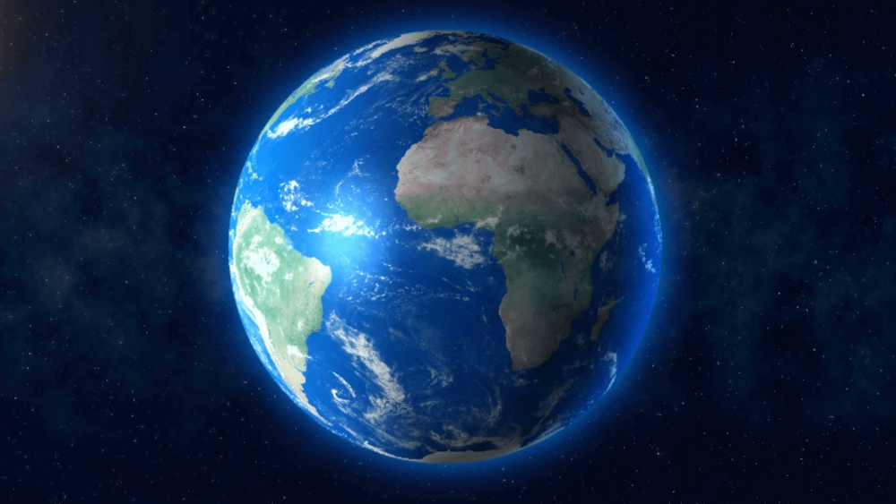

Bumi
Bumi adalah planet ketiga dari Matahari yang merupakan planet terpadat dan terbesar kelima dari delapan planet dalam Tata Surya. Bumi juga merupakan planet terbesar dari empat planet kebumian Tata Surya. Bumi terkadang disebut dengan dunia atau Planet Biru. Bumi terbentuk sekitar 4,54 miliar tahun yang lalu, dan kehidupan sudah muncul di permukaannya paling tidak sekitar 3,5 miliar tahun yang lalu. Biosfer Bumi kemudian secara perlahan mengubah atmosfer dan kondisi fisik dasar lainnya, yang memungkinkan terjadinya perkembangbiakan organisme serta pembentukan lapisan ozon, yang bersama medan magnet Bumi menghalangi radiasi surya berbahaya dan mengizinkan makhluk hidup mikroskopis untuk berkembang biak dengan aman di daratan. Sifat fisik, sejarah geologi, dan orbit Bumi memungkinkan kehidupan untuk bisa terus bertahan. Litosfer Bumi terbagi menjadi beberapa segmen kaku, atau lempeng tektonik, yang mengalami pergerakan di seluruh permukaan Bumi selama jutaan tahun. Lebih dari 70% permukaan Bumi ditutupi oleh air, dan sisanya terdiri dari benua dan pulau-pulau yang memiliki banyak danau dan sumber air lainnya yang bersumbangsih terhadap pembentukan hidrosfer. Kutub Bumi sebagian besarnya tertutup es; es padat di Antarktika dan es laut di paket es kutub. Interior Bumi masih tetap aktif, dengan inti dalam terdiri dari besi padat, sedangkan inti luar berupa fluida yang menciptakan medan magnet, dan lapisan tebal yang relatif padat di bagian mantel. (wikipedia.com)